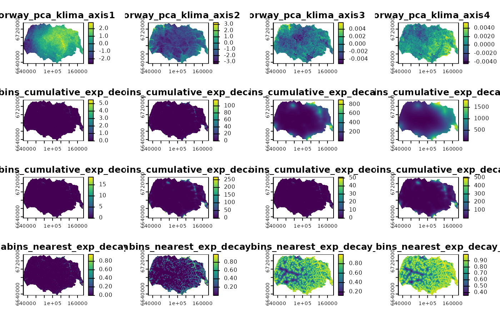

Predictor environmental variables for the Hardangervidda wild reindeer area in Norway
Source:R/data.R
rast_predictors_hardanger_500.tif.RdRaster data with multiple layers representing predictor environmental variables for the Hardangervidda wild reindeer areas in Norway, used for the vignettes and the illustration example in Niebuhr et al. 2023. Comprises multiple layers: land cover, four components of a principal component analysis which represent bio-geo-climatic variation, and 28 layers representing the cumulative zone of influence (ZOI) and the ZOI of the nearest feature for private cottages and public tourist resources, with radii from 100 m to 20 km. The raster has 500 m resolution.
Format
A Geotiff file. Projected CRS: ETRS89 / UTM zone 33N.
norway_pca_klima_axis1-4Components 1 to 4 from a principal component analysis representing bio-geo-climatic variation in Norway, from Bakkestuen et al. 2008. PCAs 1 to 4 represent, respectively, continentality, altitude, terrain ruggedness, and solar radiation. More information in Niebuhr et al. 2023. PCAs 1 and 2 also present quadratic layers.
NORUTreclass Land use and land cover classes from NORUT, reclassified as in Niebuhr et al. 2023.
private_cabins_cumulative_exp_decay_XXX Cumulative zone of influence of private cabins at each location, with exponential decay shape, and radii defined by XXX (from 100 to 20000m).
private_cabins_nearest_exp_decay_XXX Zone of influence of the nearest private cabin at each location, with exponential decay shape, and radii defined by XXX (from 100 to 20000m).
public_cabins_high_cumulative_exp_decay_XXX Cumulative zone of influence of public resorts at each location, with exponential decay shape, and radii defined by XXX (from 100 to 20000m).
public_cabins_high_nearest_exp_decay_XXX Zone of influence of the nearest public resort at each location, with exponential decay shape, and radii defined by XXX (from 100 to 20000m).
Source
Niebuhr, B. B., Van Moorter, B., Stien, A., Tveraa, T., Strand, O., Langeland, K., Sandström, P., Alam, M., Skarin, A., & Panzacchi, M. (2023). Estimating the cumulative impact and zone of influence of anthropogenic features on biodiversity. Methods in Ecology and Evolution. https://doi.org/10.1111/2041-210X.14133
Bakkestuen, V., Erikstad, L., & Halvorsen, R. (2008). Step-less models for regional environmental variation in Norway. Journal of Biogeography, 35(10), 1906–1922. https://doi.org/10.1111/j.1365-2699.2008.01941.x
See also
Data for RSF analysis: reindeer_rsf
Examples
(f <- system.file("raster/rast_predictors_hardanger_500.tif", package = "oneimpact"))
#> [1] "/home/runner/work/_temp/Library/oneimpact/raster/rast_predictors_hardanger_500.tif"
r <- terra::rast(f)
plot(r)
